כל ילד צריך מסלול משלו. אנחנו יוצאים איתו לשטח.
ספורט אתגרי, ODT וכלים רגשיים־חברתיים לבתי ספר, לקהילות ולארגונים. מגדרה ובכל הארץ, מאז 2013.
- 2013בשטח מאז
- +160בני נוער בשנה בצוות אלוש
- ט׳–י״בשכבות הגיל העיקריות
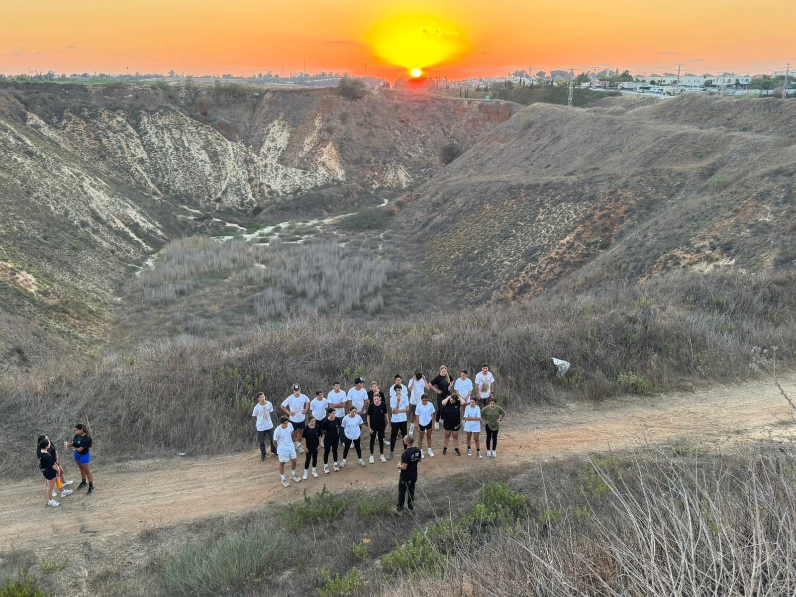
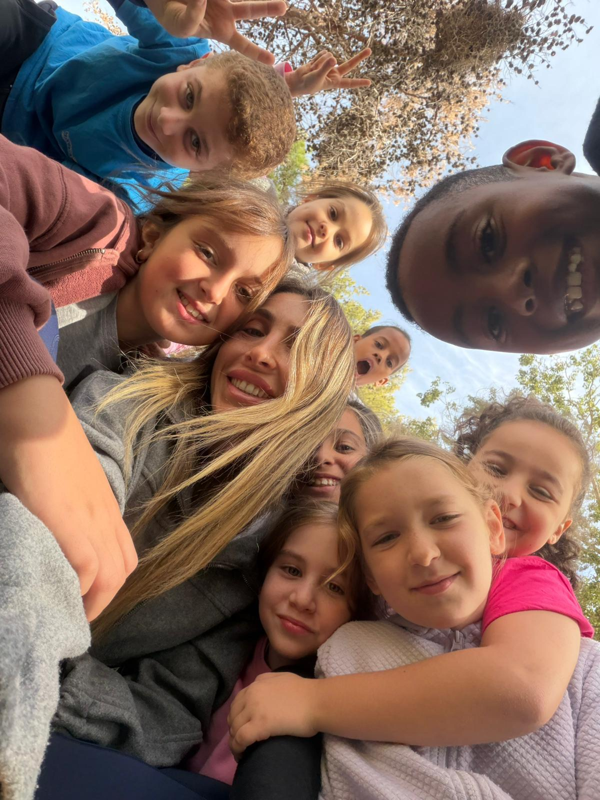
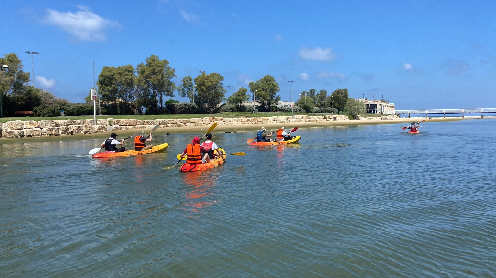
לא עוד חוג ספורט. תהליך שלם, עם אנשים שמכירים כל ילד בשם.
כל תוכנית נבנית לפי הגודל, הגיל והמטרות של בית הספר, הקהילה או הארגון שמולנו.
תוכניות חינוכיות בבתי ספר
תוכניות שבועיות, מספורט אתגרי ועד כלים רגשיים־חברתיים, בתוך מערכת השעות.
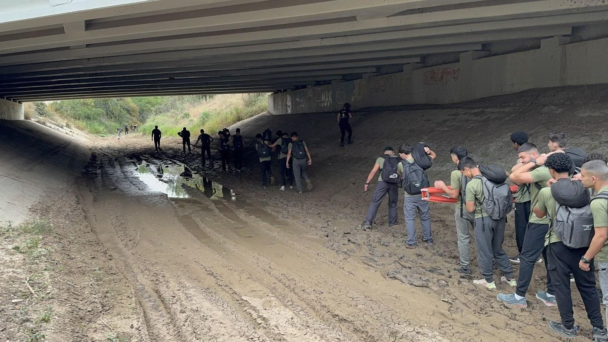
צוות אלוש
הכנה לשירות משמעותי בצה״ל, לזכרו של רס״ל ליאב אלוש ז״ל.
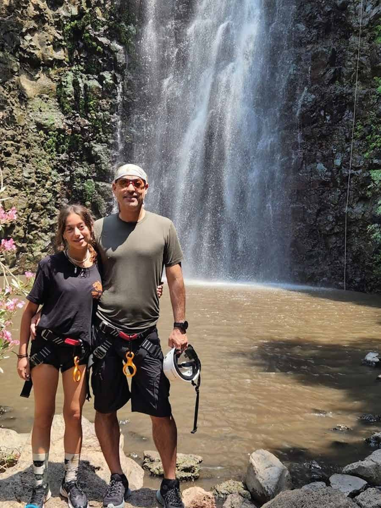
תוכניות בקהילה
הורה וילד יוצאים יחד לשטח, ותוכניות שייכות לבני נוער עם רשויות ומתנ״סים.
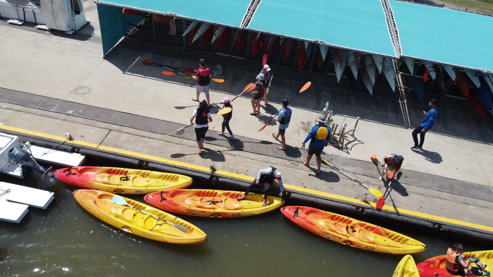
ימי גיבוש על המים
קיאקים, SUP ותוכן, מפלמחים ועד הכנרת.
מאמינים בכל אחד ואחת, ויוצאים יחד לשטח
עמותת מסלול חדש פועלת מאז 2013. אנחנו מוציאים ילדים ובני נוער מהכיתה אל השטח, ומחזירים אותם עם ביטחון, חברים וכלים לחיים. התוכניות שלנו משלבות ספורט אתגרי, פעילות בטבע ושיחה אמיתית, ומאושרות על ידי משרד החינוך.
אנחנו פועלים בבתי ספר, ומובילים תוכניות ומיזמים בקהילה, כמו מסע הורה וילד וצוות אלוש לזכרו של ליאב אלוש ז״ל. לחברות ולארגונים אנחנו מפיקים ימי גיבוש וסדנאות בטבע ועל המים. לבחור, להאמין, להצליח.
- תוכנית מאושרת משרד החינוך, מלווה מחקר אקדמי
- מאמנים ומדריכים מוסמכים, אנשי חינוך וטיפול
- ספק מורשה של משרד הביטחון
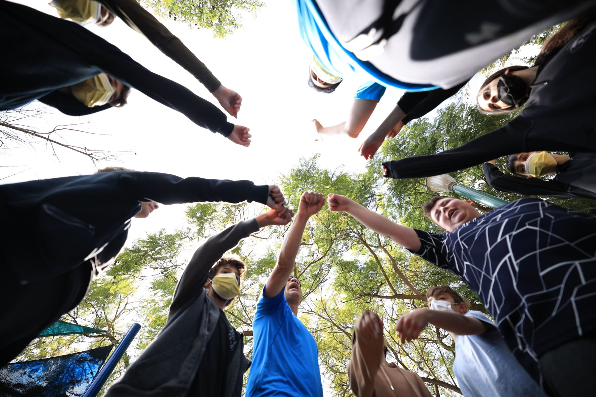
ליווי מהמיפוי ועד התוצאה
אותו תהליך חוזר בכל תוכנית, ומותאם לגודל ולמטרות של כל מסגרת.
מיפוי צרכים
פגישת היכרות עם הצוות החינוכי או הארגוני כדי להבין את המטרות.
בניית תוכנית
התאמת היקף, תכנים ושלבים למסגרת הספציפית.
הפעלה בשטח
מפגשים שבועיים או ימי שיא, בליווי צוות מדריכים מקצועי.
הערכה ומעקב
תצפיות ומשובים מהצוות החינוכי לאורך הדרך ובסיומה.
מה נשאר אחרי שהפעמון מצלצל
קולות מבתי הספר שבהם פעלנו, מאשדוד ועד רמלה.
פרויקט הריצה לימד אותי הרבה יותר מריצה. הוא חיזק את הביטחון העצמי שלי, את היכולות שלי ואת הרצון להצליח.
למדתי להכיר ביכולות שלי, לשפר את ההתנהגות ולסיים דברים עד הסוף, כמו שצריך.
התוכנית עזרה לי פיזית, נפשית וחברתית. למדתי להעריך את עצמי יותר.
עזרו לי להאמין בעצמי ולעשות דברים שלא חשבתי שאני מסוגל לעשות.
פועלים בשיתוף
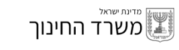
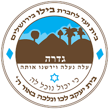
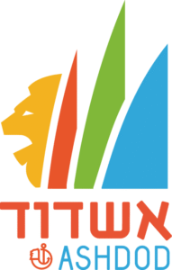
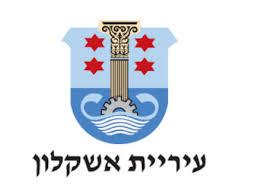
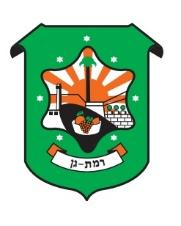
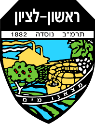
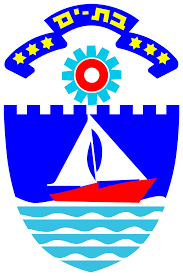
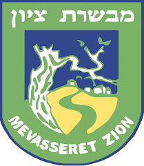
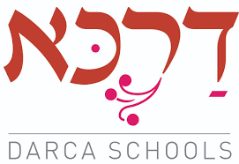
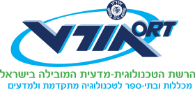
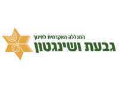
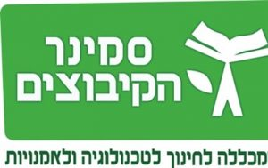
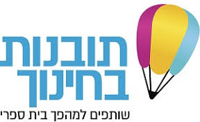
מתאימים לבית הספר, לקהילה או לארגון שלכם?
ספרו לנו על הקבוצה, ונבנה יחד את התוכנית הנכונה. נחזור אליכם תוך יום עבודה.
- רולי חדש, מנכ״ל054-4221337
- רונן054-4225112
- מיילnewmaslul@gmail.com
- כתובתפנינה 8, גדרה